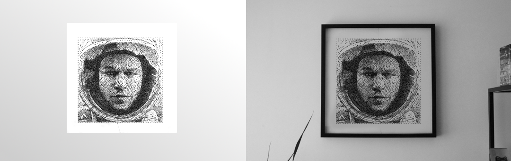

Autograph FAQ
Are you accepting orders for custom prints?
Yes! Read this FAQ and drop us an email or contact us on facebook with your idea.
How much do custom prints cost?
Depending on the size and complexity, you'll receive a quote with your simulation. Check out our store of pre-made works to give you an idea.
What can the machine generate?
Every image can be transformed but some pictures produce better results than others. Human faces yield the best results.
Things that work well:
- Organic and big shapes.
- Good photos, ideally made in a studio by a professional photographer.
Things that should be avoided:
- Small details, as they will be lost: wrinkles, hair, things far away or small.
- In general, straight lines or geometric shapes can turn up irregular.
Printing a face
When printing a person, the bigger the face in the frame, the better. The woman in the first photo is hardly recognizable but the third simulation shows details like the glossy lips and hair.
To make sure that a face is recognizable, in a 40x40cm print:
- From chin to hairline, the face should cover at least 50% of the the height.
- Before submitting a photo to us, you can resize it to 130x130 pixels to simulate an approximation of the level of detail it will have.
Original photo measuring 130 pixels and simulation.
Photos to avoid
In pictures of buildings, landscapes or maps, the details are lost and the original straight lines appear irregular.
Simulation of a building.
How is the picture adjusted?
The algorithm produces a simulation so the parameters can be adjusted before printing. Usually it takes many iterations where parameters like brightness and contrast are tuned. Sometimes details need to be tweaked or highlighted, like the eyes or glasses.
What shapes and sizes are available?
Every shape is possible, however the algorithm and current machine are optimized for:
- 40cm x 40cm (16" x 16") on a 50cm x 50cm canvas. Uses 2000-3000 nails and around 500m of thread.
- 48cm x 48cm (19" x 19") on a 50cm x 50cm canvas. Uses 3000-4000 nail and around 700m of thread.
- 48cm x 40cm (19" x 16") on a 50cm x 50cm canvas. Uses 2500-3500 nails and around 600m of thread.
Framing
We don't provide frames in order to simplify transportation and reduce shipping costs. IKEA's RIBBA frames are perfect for the 50cm x 50cm canvas.
Materials and other dimensions
The material used for the canvas is a plastic polymer. It's UV-resistant and 10mm thick. The nails are stainless steel and the thread is polyester.
The total thickness of the artworks including nails is 23mm.
Warranty
We'll immediately replace the artwork if it has manufacturing defects.
I'd like a simulation, is that free?
Absolutely! Send us a picture (or multiple pictures) and we'll evaluate if they fit the requirements. We'll generate two simulations for you:
Simulations with different backgrounds